Smart Agentic System to Manage Design Systems
Anyone can grab a design system off the shelf and start designing. The harder problem is the design system a company already has.
If you're building something new today, you don't have to invent a design system from scratch. Material Design, shadcn/ui, Ant Design, Chakra — pick one, drop it into Figma or a whiteboard, and you can start sketching a real app, website, or piece of software the same afternoon. For a brand-new product, this problem is basically solved.
Pick one, drop it into Figma, start designing today.
But most software isn't brand new. It's a company that's been building the same product for years, with a design system that was drawn up long before anyone had heard of an AI coding agent.
Think about the design systems running some of the biggest products around — Shopify's Polaris, IBM's Carbon, Salesforce's Lightning system, Google's own Material Design. Every one of them existed years before tools like Cursor, Claude Code, or Figma's own AI features showed up. Nobody built them with an AI agent in mind.
Dates are approximate. The point holds either way: these systems were built for people, years before they had to work for an agent too.
So the real question isn't "which design system should I use." It's: how does a company hand its design system — the real one, already running in production — to an AI agent, and trust the agent to actually understand it? Not glance at it once. Understand it.
How do you teach an AI coding agent a design system that existed years before AI could code — accurately enough that the mistakes become negligible, not just fewer?
This turns out to be genuinely hard, and the data backs that up. Teams with a mature, well-structured component library are seeing real gains — less time spent scaffolding new screens, lower engineering cost on repetitive UI work. But that only holds if the design system was actually structured before it was handed to an agent. Give the same agent an unstructured, screenshot-level view of a design system instead, and the opposite happens: it ignores the design system, hard-codes colors, and overrides typography, because it never understood which components existed or which rules were mandatory.
less time scaffolding new screens, for teams with a mature, well-structured component library.
lower development cost when repetitive UI work is handed to a well-onboarded agent.
"Ignores the design system, hard-codes colors, overrides typography" — the same AI, handed an unstructured design file instead.
The single biggest predictor of whether AI-generated code is actually usable isn't which AI tool you pick. It's whether the design system was structured — not just captured as pixels — before anyone handed it to an agent. That's the real problem worth solving: not authoring a new design system for AI, but onboarding the one a company already has, accurately enough that an agent can be trusted to build real product screens from it, not just guess at them.
The rest of this case study walks through exactly that, using one real, production design system as the proof: Noise Audio's own design language system, and what it actually took to get an AI agent to understand it.
The Problem
Point solutions for "hand a coding agent a Figma frame, get a component" already exist, and they're genuinely good — for a single screen, designed once, built once. That's not the situation a real product team is in. A production design system is hundreds of components deep, cross-referenced, and it keeps changing. That's the version of this problem nobody has actually solved.
What Changes At Product Scale
- One frame, read once, thrown away after
- Nobody notices if a component is 90% right
- No expectation the output stays in sync with Figma later
- Hundreds of components, reused everywhere, for years
- A wrong pixel compounds every time an agent reuses that component
- Tokens, variants, and rules change — the library has to keep up
The Failure Mode
Hand a real, production design system to a coding agent through Figma's MCP today, and it doesn't build your design system — it builds a rough guess of it, once, with no way to get more accurate the second time.
Close Enough To Look Right
To see this gap first-hand instead of just arguing about it, we ran a small experiment: take two of Noise Audio's own screens and have a coding agent rebuild them as working HTML using nothing but visual feedback — no structural design data, just iterating by eye against the reference. Holistically, the result holds up well — roughly seventy percent of the way there at a glance. Looking closely is where it falls apart.
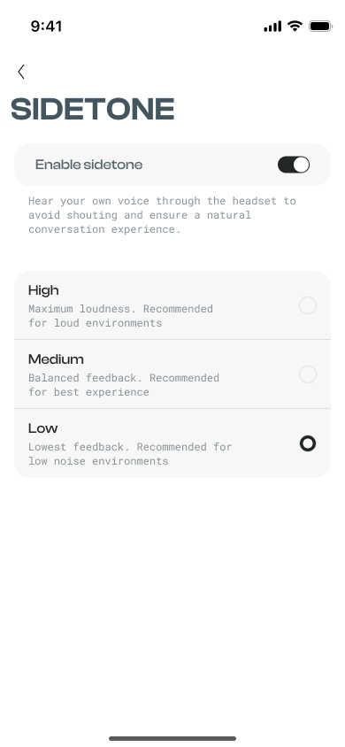
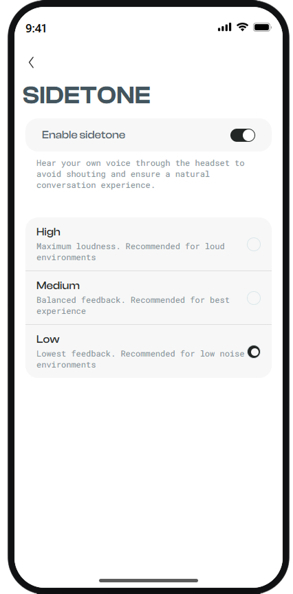
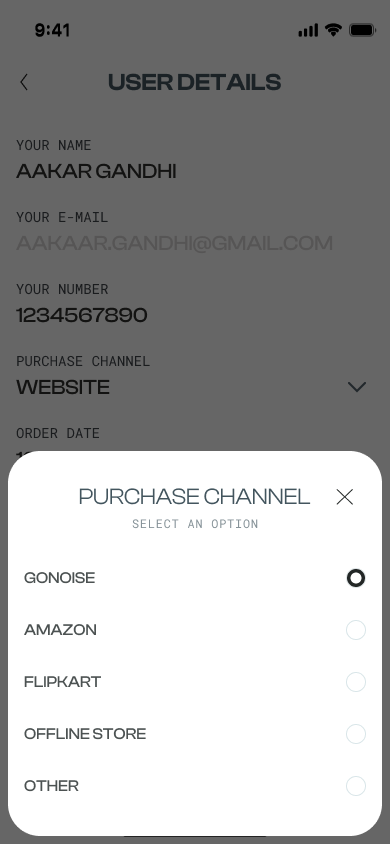
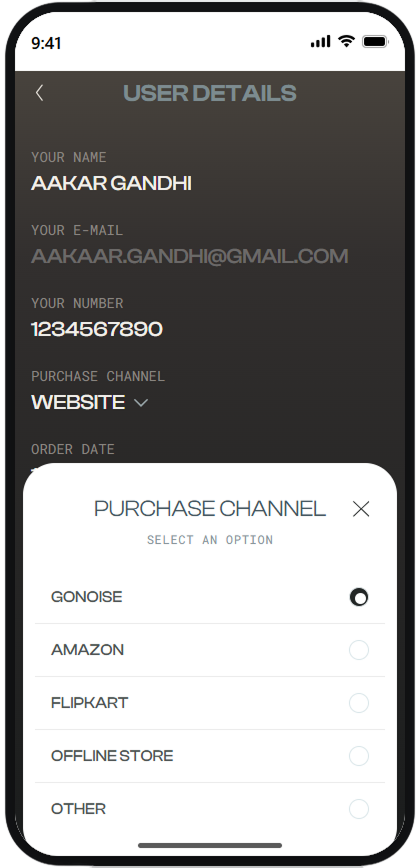
#666666 gray in the design, versus a top-to-bottom gradient in the
clone that drifts from a warm #48433d near the top to #2b2929 near
the bottom. Nobody specified a gradient. The agent produced one anyway, because it was
matching pixels in a screenshot, not reproducing a rule.
This is what "roughly seventy percent accurate" looks like in practice — genuinely close at a glance, on both screens. But neither miss shows up in a quick look, and both are exactly the kind of gap that compounds the moment a component gets reused a hundred times across a real product, instead of recreated once for a single screenshot.
Not Hypothetical — It Happened To This Dashboard
Flattened pixel snapshots, not structure. The first ingestion recorded bare width/height numbers instead of fill/hug/fixed sizing rules — a text field's "0/50" character counter rendered bleeding off its own container, because nothing described that it should size to its content.
Instances that never resolve. Nested components silently fell back to generic placeholder boxes instead of rendering their actual selected Figma variant — an agent building from this would ship the wrong state every time.
Icons collapsing to nothing. A fixed-size icon whose only child was absolutely positioned computed to a 0×0 box, because "hug" sizing has no content to size to when the layout model doesn't capture absolute positioning.
None of these were cosmetic. A design-system dashboard that can't be trusted pixel-for-pixel can't be trusted by anyone building from it — not an engineer, not a PM, and least of all an agent that will reuse the same wrong component hundreds of times. That's the problem this project set out to actually solve, not patch around.
The Approach
Every component in a design system carries two kinds of information. One kind is easy — color, spacing, size, text. An agent can pull all of that straight out of Figma by itself. The other kind is usually missing: when to use this component, when not to, what it's meant to do, and what breaks if someone uses it the wrong way. Most tools only ever give an agent the first kind.
Most agents only ever see the left column.
Our approach is simple: give the agent both columns, for every component. Not just what it looks like, but why it exists, how it should be used, and where it shouldn't be. Once an agent actually knows this, it stops just copying shapes — it starts making the same calls a designer would: which component is right for this screen, and which one isn't.
The Part A Machine Can't Get On Its Own
Here's the part that actually matters, and it's worth slowing down on: the left column is just data sitting inside the Figma file. Any tool can read it — colors and coordinates are right there to extract. The right column isn't in the file at all. Design intent, anti-patterns, usage rules — none of that is a pixel or a property. It only exists in a designer's head, in a decision someone made months ago, in a rule the team just knows and never wrote down. No AI, no matter how advanced, can look at a button and know "don't use this for a destructive action." That isn't visible information. It has to be told — it can't be observed.
So this is where a human has to step in. A designer has to actually sit down and write out, for every component: what it's for, when to use it, when not to. That's the one part of this project we didn't try to automate — because it can't be. It's a real, one-time knowledge transfer from the person who understands the design system to the system that's going to reason about it from that point on.
- Do not apply both row-level and container-level corner radius simultaneously.
- Do not use standalone cards when multiple related items should be grouped.
- Notification chin can only be used with a standalone card.
Pulled verbatim from this repo's own component records — nobody could have guessed these rules from the Figma file alone.
Once that knowledge is written down — not guessed, not inferred, actually authored by a person — it gets logged into the same record as the component's structural data. That record is the foundation the entire backend logic runs on. From then on, every time the agent has to decide "should I use component A or component B here," it isn't guessing from pixels. It's reading a rule a human actually gave it.
never written down
anti-patterns, logged
and when
Pixels alone make an agent that copies. A one-time knowledge transfer from a human — logged once, read forever — makes an agent that decides.
Stage 1
Before any metadata gets written, every component needs one decision made first: what kind of component is it? This isn't busywork — the bucket a component falls into changes what questions even get asked about it later.
The same four buckets sort every one of this repo's 26 components — no fifth category, no exceptions.
That piece of information from the last section — usage, design intent, anti-patterns, relationships — has a name. It's called metadata. You've already seen what it says. Here's the actual shape it's written in.
component: id: master-card type: organism usage: > This is the master card used in the majority of table cell use cases. design_intent: > Provide a flexible row pattern that supports standalone surfaces and grouped lists. anti_patterns: - rule: > Do not use standalone cards when multiple related items should be grouped. composition: used_molecules: [actionables]
Same fields, same shape, for every component in the library.
Writing this by hand is harder than it looks. A designer has to think through every anti-pattern and every relationship, in a strict format a machine can parse — correct structure, correct field names, nothing missing. Most designers have never written a line of YAML in their life, and there's no reason they should have to.
So instead of asking a designer to write YAML directly, we built a prompt for it. Here's what that actually looks like, one real exchange, start to finish.
Drop a screenshot into a fresh Claude chat — here, a new home-page navigation bar — along with whatever you already know about it. It doesn't need to be much. One line was enough: "this is the navigation for the home page, it should be only and only used on homepage as the L1 navigation."
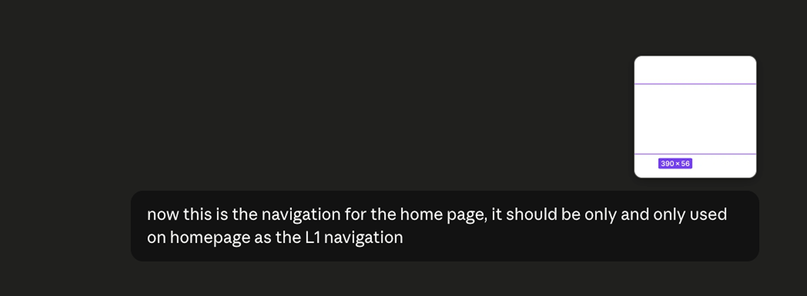
It reads the screenshot itself: the name, the type, the size, the two icon clusters. That's the easy half from the first section — the part any tool can extract. For everything else — what the icons actually do, whether this component has a sibling it must never be confused with, whether it has variants — it asks, instead of guessing.
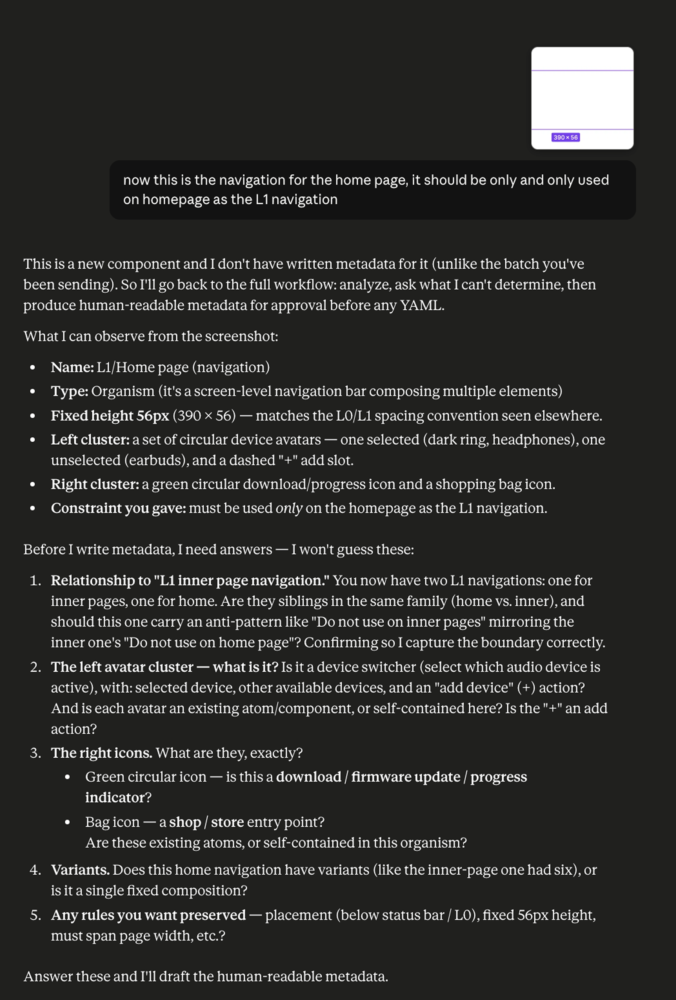
No formatting, no template. Just short, direct answers to each question, the way you'd explain it to a new teammate.
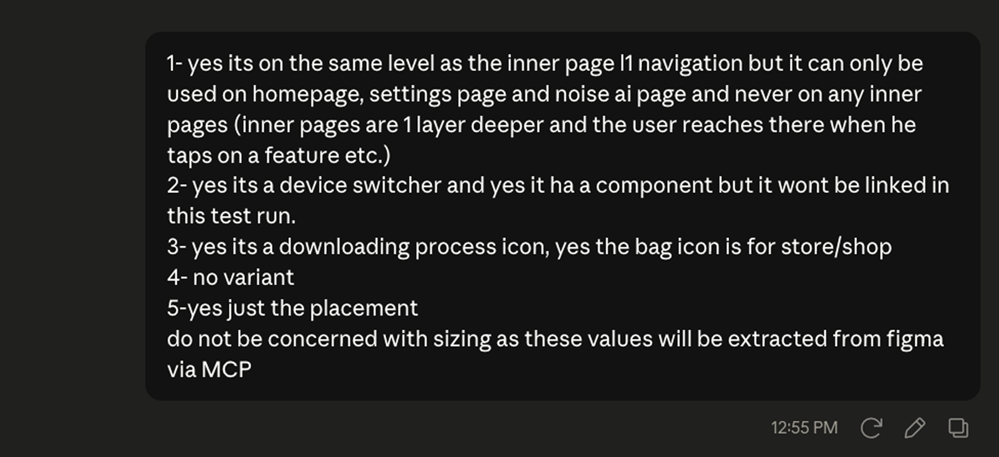
Before any YAML gets written, it turns your answers into a human-readable draft: purpose, usage, anti-patterns, design intent, composition, rules. You read this the same way you'd read a paragraph, and every line traces back to something you actually said — nothing invented, nothing assumed.
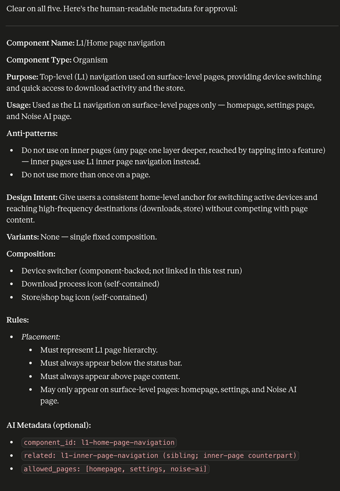
"Create the YAML file" — that's it. Same content as the draft above, no new information, just reshaped into the structured format an agent can parse reliably.
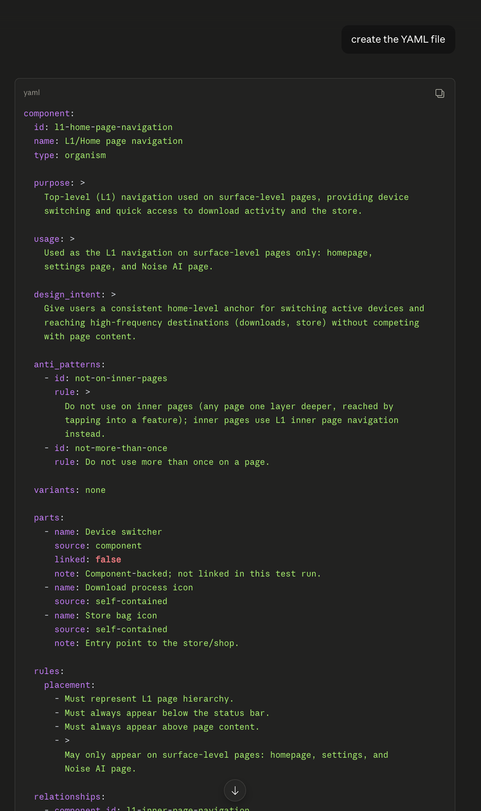
Copy the YAML into the component's own Description field — no separate database, no spreadsheet, no second tool to keep in sync. It lives right next to the component itself, in the file the designer already works in.
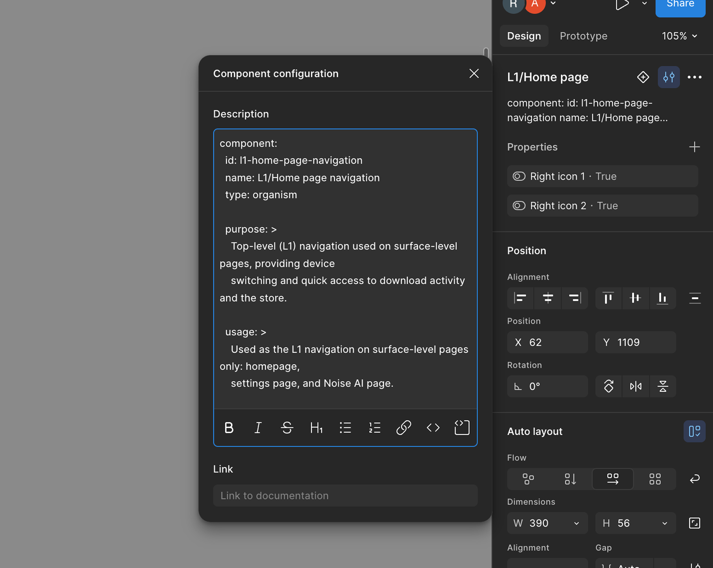
Why YAML specifically? It's one of the simplest structured formats there is — just
key: value pairs, with
indentation doing the job grammar would do in a sentence. usage:
is always in the same place, every time, for every component. That's exactly why an agent
can read it reliably. Hand an agent a paragraph of prose instead, and it has to guess where
the anti-patterns end and the usage note begins. A field named
anti_patterns: never needs
guessing — and it's faster for the designer too, once the shape exists, filling in a
template beats composing paragraphs from a blank page.
And once it's written, it doesn't go into a separate database or a spreadsheet somewhere. It goes exactly where the designer already works.
the designer already works
back out automatically
component's own record
The same field you saw in the master-card example, back in The Approach.
Stage 2
Stage 1 gets you one component's worth of knowledge — a name, a purpose, a list of anti-patterns, sitting in one Figma description field. Do that for every component in the file, and you're not left with a pile of scattered notes anymore. You're left with enough to build something real: a structured repository.
Stage 1 was a live conversation, because every component is different and needs its own questions answered. Stage 2 isn't — it's one existing prompt, handed to an agent, run once the whole Figma file has been metadata'd. The agent reads every component straight from Figma via MCP, pulling both kinds of data in the same pass — the real visual values (size, spacing, color) and the YAML metadata sitting in each component's own description — and writes everything it finds into a real repository, which it pushes straight to GitHub.
its Stage 1 YAML
in the same pass
26 files total
That repository isn't a hypothetical — it's the one this exact case study runs on, hosted right here on GitHub. Every piece of YAML you've seen so far, master-card included, is a real file sitting inside it right now.
Stage 3
Stage 2 leaves you with a real repository on GitHub — one file per component, each one carrying both its real Figma values and its Stage 1 metadata. Stage 3 is what turns that repository into something a human can actually look at: a dashboard.
tokens, one registry
dashboard in one pass
searchable
This isn't a mockup of what the dashboard could look like. It's a real screenshot of the real thing, generated from the real repository.
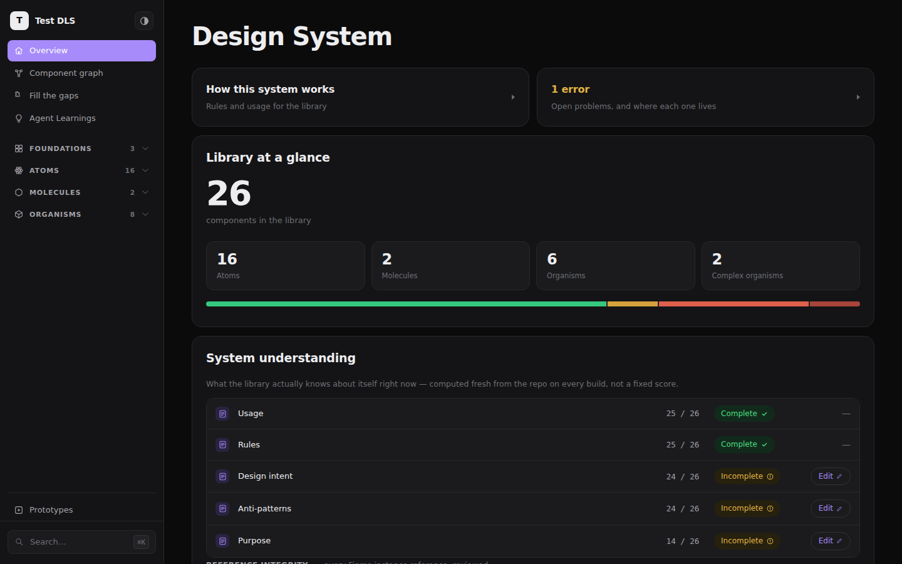
26 components, one repository, generated automatically — nobody hand-built this page.
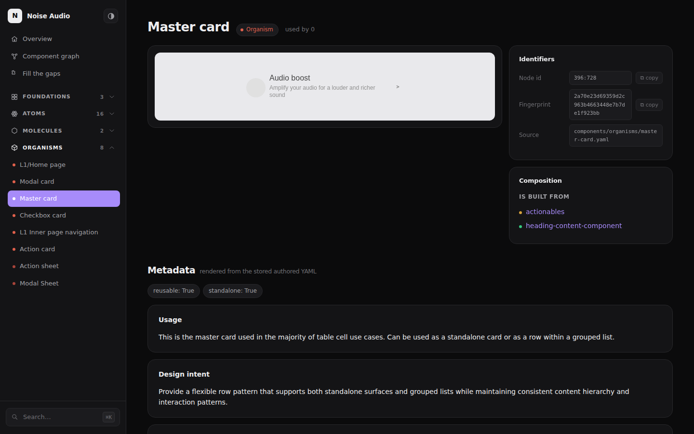
The same master-card usage and design intent from The Approach and Stage 1 — live, on its own page, generated straight from the repository.
Stage 4
Stage 2 and Stage 3 give you a repository and a dashboard. Neither one, by itself, tells the agent how to think. That's what this stage builds — the part of the system that actually reasons. We call it the graph, and it's the closest thing this project has to a brain.
Here's the problem it solves. Picture a real design system with hundreds of components, not 26. Hand an agent a PRD and ask it to build a screen, and the naive approach is to read every single component before deciding anything — hundreds of files, most of them irrelevant, burning tokens and diluting the one thing an agent has a limited supply of: context. The more it reads, the less sharp it gets. The graph exists so it never has to do that.
Every one of this repo's 26 components is a node in the graph, wired together by 48 real relationships pulled straight from the metadata each one carries. Color marks what kind of component it is — atom, molecule, organism, complex organism, the same four buckets from Stage 1. Size marks how often it gets reused. And the connections come in two kinds: a solid line means one component is literally built from another — structural, part of the whole. A dashed line means the two are related in how they behave, even though neither is built from the other.
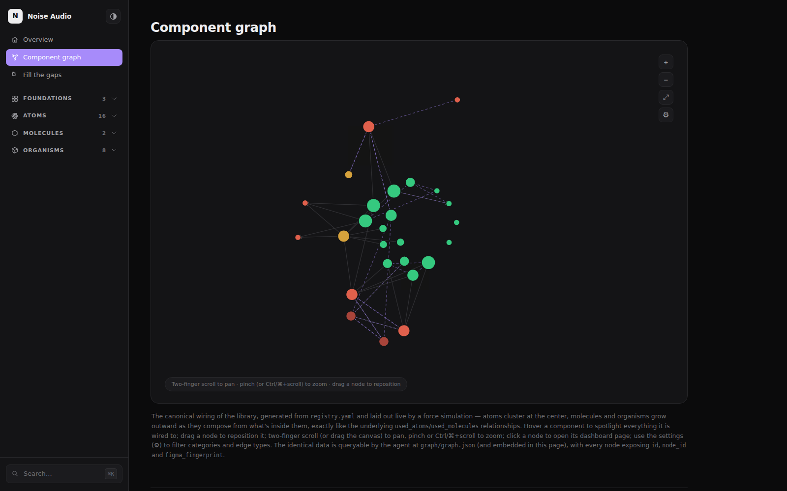
This repo's entire library, 26 components and 48 relationships, laid out live by a force simulation — nothing hand-positioned.
Hover any node and the graph spotlights exactly what it's wired to, dimming everything else. Below, that's master-card — the same component from The Approach, Stage 1, and Stage 3 — lit up next to the two things it's actually built from: the actionables molecule and the heading-content atom. Everything unconnected fades to almost nothing.
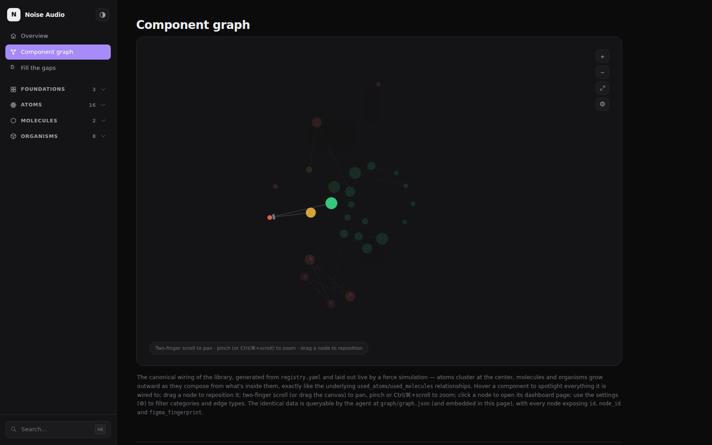
Hovering master-card spotlights its two structural children — the same "is built from" relationship you saw on its dashboard page in Stage 3.
Click a node, and it takes you straight to that component's own page in the dashboard — the same page from Stage 3. The graph isn't a static diagram sitting next to the real system. It's a map you can actually walk, and it's the exact same map the agent walks.
That one rule is the whole trick. Instead of scanning every component, the agent starts only at the top — the organisms and complex organisms — and reads just their metadata: usage, anti-patterns, design intent, the things Stage 1 wrote down. Anything that doesn't fit the request gets discarded right there, without ever opening what's inside it. For whatever survives, the agent follows the graph's structural edges downward, one level at a time, re-checking fit at each step, until it reaches the molecules and atoms that component is actually built from.
not their children
never scanned further
then atoms
A design system with 500 components never forces the agent to read 500 files. It reads however many organisms are plausible candidates, throws out the ones that don't fit before ever opening them, and only follows the graph down into the ones that survive. Fewer files read means fewer tokens spent and less context diluted with irrelevant components — which is exactly why the same request gets answered more accurately, not less, as the library grows.
Diving Deeper
This section walks through what each page in the finished dashboard actually does, and why it exists — one page at a time.
Overview
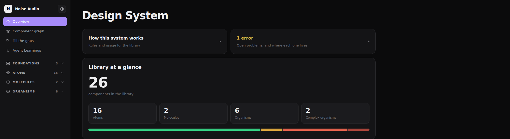
Three things sit at the very top, before anything else.
How this system works is a card you click open right there on the page — it explains the real rules for the library: what each kind of component is for, and when not to reach for it.
1 error works the same way, but for problems. Click it and it tells you exactly what's still broken and where to go fix it. Today there's exactly one.
Library at a glance is the plain count: 26 components total, split across four kinds — atoms, molecules, organisms, and complex organisms — with a colored bar underneath so the split reads in one glance instead of four separate numbers.